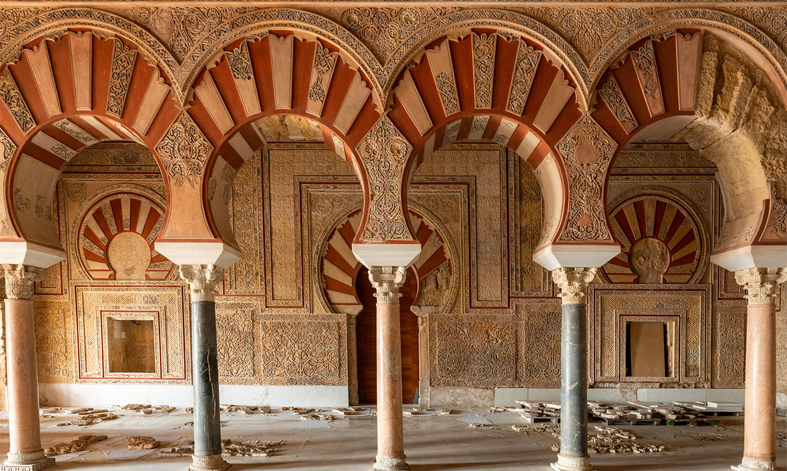

Medina Azahara
Medina Azahara (Madinat al-Zahra) o la “Ciudad Brillante“, para los musulmanes, fue construida en las faldas de la serranía cordobesa (en el Chabdál al-Arus o “Monte de la Novia”) al noroeste de Córdoba capital. Se trata de uno de los conjuntos arqueológicos más importantes de España, que fue mandado construir por el primer Califa cordobés, Abderramán III, an-Násir (“El Victorioso”).

Medina Azahara fue concebida como la nueva sede del gobierno del califato y como lugar de residencia del Califa. Pero no fue sólo un palacio, sino una auténtica ciudad dotada de una compleja organización urbanística en cuyo interior se desarrollaba la administración civil y militar del nuevo Estado. La ciudad palatina también se convirtió en símbolo de la independencia del soberano omeya frente a los califatos islámicos orientales, el abbasí de Damasco y el fatimí de Egipto. Con su construcción, Abderramán III afirmaba que asumía con todo merecimiento el título de Califa y lo que ello comportaba: en el año 929 se autoproclamaba máximo dirigente político y religioso del Islam como sucesor del profeta Mahoma y príncipe de los creyentes y, como tal, le correspondía gobernar y habitar en una edificación monumental que correspondiera con la grandeza y simbolismo de su dignidad.

Sin embargo, para comprender la importancia de Medina Azahara hay que entender que, aunque se trata en esencia de un yacimiento arqueológico, desde un punto de vista artístico se trata de uno de los complejos monumentales más originales dentro de la arquitectura hispanomusulmana y del arte islámico en general. Esto se debe a que ni su estructura ni su ornamentación han sido alteradas con modificaciones posteriores, de modo que los restos exhumados por las excavaciones nos permiten tener una idea muy aproximada a la forma que tuvo en su época.